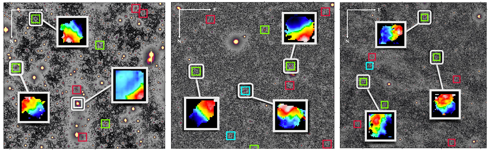
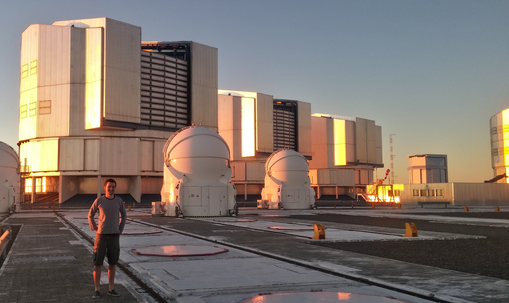

Integral Field Spectroscopy
Integral Field Spectroscopy (IFS) is a revolutionary technique for understanding what’s going on within galaxies, combining the spatial resolution of taking an image with the information content of spectroscopy. The now-completed SAMI galaxy survey and the forthcoming Hector Galaxy Survey (for which I’m leading the target selection) use integral-field spectroscopy to study thousands of nearby galaxies, building up a census of our cosmic neighbours. I’m particularly interested in the chemical properties of the stars in these galaxies, and studying how a galaxy’s cosmic history can influence its present-day properties.

The Stellar Initial Mass function
The Initial Mass Function (IMF) describes the proportion of massive stars in a galaxy to those which are lighter than our sun. It’s key for understanding a galaxy’s lifecycle, and gives important clues to how the galaxy formed in the first place. During my PhD, I tried to measure the IMF within nearby galaxies by looking for the “fingerprints” of low-mass stars in the spectra of their integrated light. I was recently a co-investigator on an accepted JWST proposal to try and do this on some galaxies much, much further away, so watch this space!
Statistics and Software
I’m interested in learning new statistical techniques to make better sense of the large amounts of data astronomers produce. I also write open source software (mainly in python, but also in R) and experiment with machine learning tools and deep neural networks. I have developed a package to fit galaxy spectra with population models (PyStaff), written a pure python/numpy implementation of a deep neural network to classify hand-written numbers (MNIST) and collaborated on a project to create plausibly-sounding fake scientific titles using natural language processing tools.
Observing
I’ve been lucky enough to travel to some amazing places during my career, with over 75 nights observing experience across the 3.9 metre Anglo-Australian Telescope, the 200-inch telescope at Palomar Observatory, California and the Very Large Telescope in the Atacama Desert, Chile.
